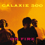
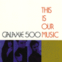

Below is a collection of original releases by or featuring Galaxie 500. Click on image for more, in-depth information on each release.
| Image | Format | A-Side or Title | Label | Catalog # | Year |
more info |
tape | Galaxie 500 | 1987 | ||
more info |
7" | "Tugboat" | Aurora | AU001 | 1988 |
more info |
7" | "Oblivious" [alt.version] from Chemical Imbalance comp. |
Chemical Imbalance | 1988 | |
 more info |
LP | Today | Aurora | AU002 | 1988 |
|  more info |
LP/CD/ cassette |
On Fire | Rough Trade [US/UK] |
ROUGH US74 ROUGH 146 |
1989 |
more info |
12"/CD | Blue ThunderEP | Rough Trade [UK] |
RTT246 | 1989 |
more info |
7" | "Rain" | Caff | CAFF 9 | 1989 |
|  more info |
LP/CD/ cassette |
This Is Our Music | Rough Trade [US/UK] |
RUS 86 ROUGH 156 |
1990 |
more info |
12"/CD | Fourth of July EP | Rough Trade [UK] |
RTT249 | 1990 |
more info |
LP/CD/ cassette |
"Cheese & Onions" from Rutles Highway Revisited comp. |
Shimmy Disc | Shimmy Disc 41 | 1990 |
more info |
CD | Selected Galaxie 500 | Rykodisc | VRCD 0355 | 1996 |
more info |
CD | Galaxie 500 [4-CD box set] |
Rykodisc | RCD 10355 | 1996 |